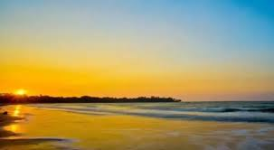

MANDWA
Mandwa is a scenic coastal village in Raigad district, Maharashtra, known for its sandy beaches, water sports, and ferry connectivity to Mumbai, making it a popular weekend getaway.
WHERE IT IS ?
It is located in the Raigad district, Maharashtra, along the Konkan coast which is about 10 km from Alibaug and directly connected to Mumbai via ferry services from Gateway of India.
IMPORTANCE OF THIS PLACE :-
A popular beach destination near Mumbai, famous for its clean shoreline, water sports, and as a gateway to Alibaug and other Konkan attractions.
NEARBY PLACES FOR VISIT :-
STAYCATION
Stays are in Mandwa and Alibaugwith cottage, homestays, and luxury resorts.
Cost for stay is ₹2,000 – ₹6,000 per night .
Food authenic are Malvani seafood, vegetarian Konkani dishes, and modern cafés near the beach.